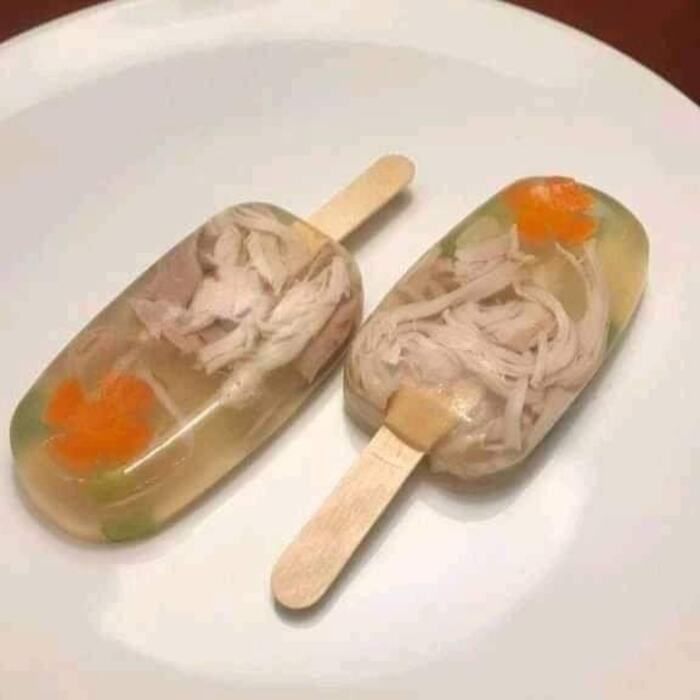

Whimsy Meets Flavor

Gelato
Get ready for a whimsical and visually stunning culinary adventure with our Chicken Popsicle with Edible Flowers!
Succulent shredded chicken coated in tangy barbecue sauce, paired with colorful and edible flowers, all frozen into delighful popsicles
The blend of savory chicken and the delicate sweetness of the flowers will captivate both your taste buds and your eyes.
Ingredients
- 1 cup cooked and shredded chicken (you can use grilled, baked, or boiled chicken)
- 1/2 cup barbecue sauce (store-bought or homemade)
- 1/4 cup water
- Popsicle molds (with sticks)
- Edible flowers (such as pansies, violets, nasturtiums, or any other edible flowers of your choice)
Recipe Instructions
- Prepare the chicken: Cook the chicken if it's not already cooked. You can grill, bake, or boil the chicken until it's fully cooked and tender.
- Mix with barbecue sauce: In a mixing bowl, combine the shredded chicken with barbecue sauce.If the barbecue sauce is too thick, add about 1/4 cup of water to the mixture and stir until the chicken is evenly coated.
- Fill the popsicle molds: Carefully spoon the chicken and barbecue sauce mixture into the popsicle molds. Press down gently to make sure there are no air pockets, and fill the molds to the top.
- Add edible flowers: Before placing the sticks into the molds, insert a few edible flowers into each popsicle mold, arranging them in a visually appealing way. The flowers will add a touch of color and glamour to the popsicles.
- Insert sticks: Lit that.
- Freeze the popsicles: Put the popsicle molds in the freezer and allow them to freeze completely. It may take around 4-6 hours, depending on your freezer's temperature.
- Unmold and serve: Once the popsicles are frozen, remove them from the molds by running warm water on the outside of the molds for a few seconds. Gently pull the popsicles out.
Home
Cannoli